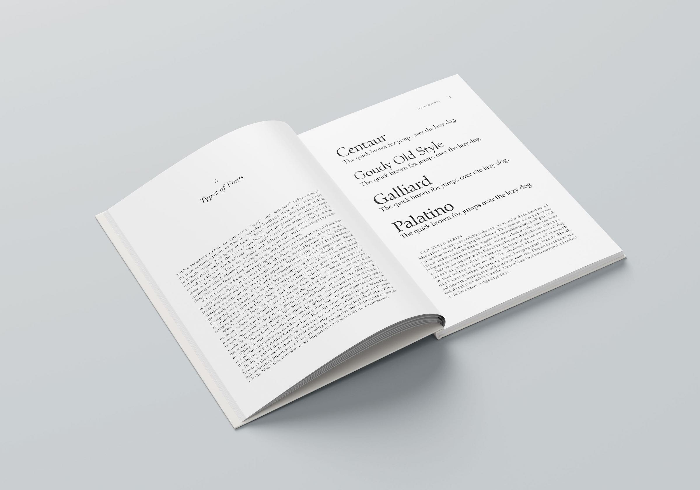
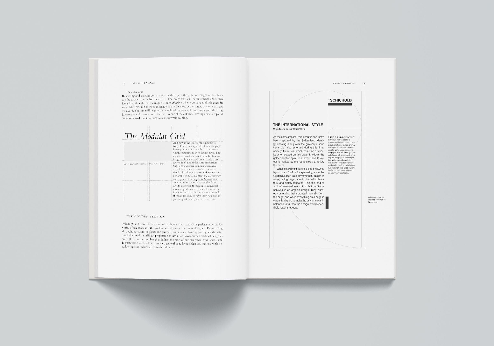

I wrote this book at the end of my yearlong independent study in high school, which served as a capstone to everything I'd learned about typography and layout design. At 64 pages, the book was comprised of a foreword, six chapters, and a lengthy appendix featuring a diverse gallery of fonts. The goal was simply to educate the everyday layman about the fundamental principles of type, but to me, it was also a work of love, and a culmination of not just a year of looking at letters but my lifelong passion for them.
I discovered my love for fonts way back in elementary school, when I'd scroll through all the fonts that came bundled with Microsoft Office, carefully remembering them one by one. I knew that Goudy Old Style was the one with the short tail on the y (I later learned it was called a descender). I noticed how the uppercase J was treated differently by many different fonts—with Baskerville hanging low and wide, and Cochin wide but on the same line as everything else (which, I also learned later, is called the baseline).
I can go on about this topic and why I love their hidden utilities and roles in everyday life, but a lot of it is summarized in the book. You can find a copy of it online here.
Here's a few important things I touch upon in the book. The first is type classification: beyond the most commonly-known ones, serif and sans serif, there exist many more episodic eras in typography.
I go over old style serifs, and how they turned into the transitional serifs, into the modern serifs, and how the slab-serifs emerged. There's bits of history behind all of these, as well as the humanist, grotesque, and geometric sans serifs. In general, I go over the feel of each one, and provide more context towards their usage. After all, each font evokes a different sense of presence, even if it's interpreted by the reader subconsciously.
I also go over the fundamentals of developing a proper font hierarchy. Many factors need to be considered, from contrast to rhythm to how long someone expects their titles and subtitles to be. Widely-kerned smallcaps can look great if restricted to just a few words, but it can be harder to read a full sentence like that.

Choosing a body text font is different from choosing a caption font, but all of it needs to be considered together as one hierarchy. Is it consistent? Is it clear? Is there a good balance of type elements, like bolding, italicizing, and casing? How is the density?
We zoom out from there to talk about general layout and gridding; although this dips more towards graphic design, it's still important to consider when laying out text in an organized fashion.
We go over margins, widows, and orphans; gutters, flowlines, and modules. I mention common ways to use grids, as well as the golden section layout.
Upwards of 80 fonts are featured in this book, used both as examples and listed in the appendix, which are then accompanied by large sample texts of the quick brown fox jumps over the lazy dog.
The whole book was laid out in Adobe InDesign, when my mentor taught me how to use master pages for the first time. (It would have helped a lot for all the past issues of the school newspaper I've worked on.) All the different font options were set as styles of their own, with "Next Style" options correctly set to the style that should follow on the next line. Page numbers also ran along each page in their own format, and the textboxes were set automatically with continuation between them.
At the end of all this came perhaps the most uninspiring moment of the whole project. It was time to name this piece. I didn't know what to call it, but I knew my font hierarchy: the titles were in Raleway, the captions were in Corbel, and the text was set in Bembo. And so it went on the front page.
A year before this, I led a workshop with the school faculty on the principles of graphic design. I talked about rhythm and contrast and unity, but the workshop was just that: some examples, a quick lecture, an exercise, and then it was done.
This project, though, was much more about permanence. It was something to flip back and reference again and again, and it reflected a love of something I wanted to share with the world.
I'm not that proud of my cover, to be fully honest, but I did write my heart out on the book's contents. It was a great exercise in typesetting and book publishing, following my years of self-taught graphic design with which I shoved monstrosities into the school newspaper. When I look back at everything I did in that period of time, I can clearly see a pattern of growth over the years, but I still view this project as almost a capstone of what I learned in high school. It was one of the last projects I turned in before graduation, but it's one that still stays with me all these years later.